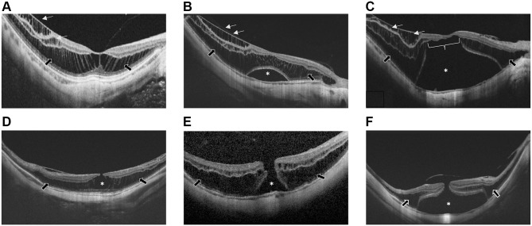
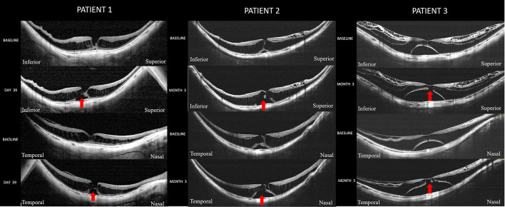
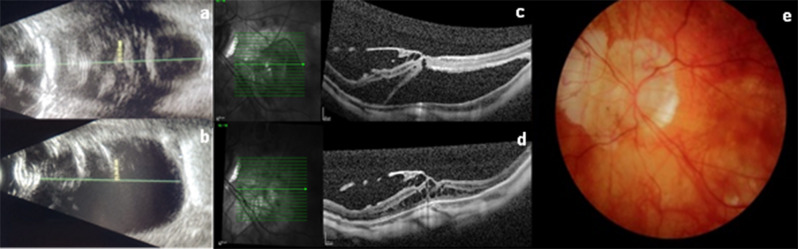
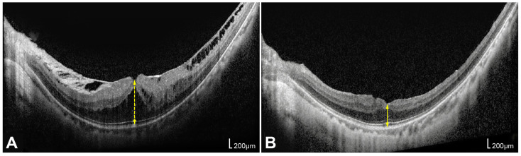
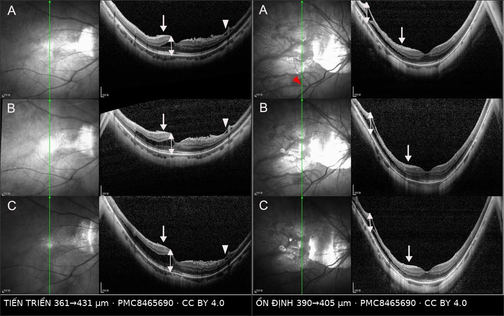

1516 — Bệnh lý co kéo cận thị (myopic traction maculopathy, MTM) & tách lớp hoàng điểm / Myopic traction maculopathy and foveoschisis
Tags: pattern:foveoschisis pattern:tach-lop-vong-mac pattern:bong-hoang-diem pattern:lo-hoang-diem pattern:cot-Muller vung:mat vung:hoang-diem vung:hau-cuc anatomy:ILM anatomy:staphyloma anatomy:hac-mac protocol:SS-OCT protocol:OCT-12mm protocol:USG-B-scan protocol:do-truc-nhan-cau score:MSS score:ATN score:schisis-S0-S4 incidentaloma:khong
Mức chắc chắn (certainty): tổng hợp y văn (literature synthesis) — dựng từ đoàn hệ tự nhiên 113 mắt (BMC Ophthalmol 2021, PMC8465690, CC BY 4.0 — dùng ảnh), đoàn hệ 120 mắt theo dõi dọc (Front Med 2021, PMC8777019, CC BY 4.0 — dùng ảnh), đoàn hệ 101 mắt (Cureus 2024, PMC11230611, CC BY 4.0 — chỉ đọc số), 153 bệnh nhân hai mắt (Invest Ophthalmol Vis Sci 2021, PMC8665302, CC BY-NC-ND 4.0 — chỉ đọc số), 38 mắt trục ngắn < 26,5 mm (Retina 2022, PMC8852681, CC BY-NC-ND 4.0 — chỉ đọc số), phân tích gộp 9 nghiên cứu/350 mắt (BMC Ophthalmol 2024, PMC10913604, CC BY 4.0 — chỉ đọc số), 61 mắt bong hoàng điểm (Sci Rep 2022, PMC9017033, CC BY 4.0 — chỉ đọc số), 36 mắt sau PPV + bóc ILM (J Ophthalmol 2025, PMC11842140, CC BY 4.0 — chỉ đọc số), 33 mắt đo chiều cao hoàng điểm (Life 2026, PMC12942102, CC BY 4.0 — dùng ảnh), loạt 3 ca vành đai hoàng điểm (Int J Retina Vitreous 2024, PMC11350928, CC BY 4.0 — dùng ảnh), tổng quan thực hành (Community Eye Health 2025, PMC11938194, CC BY 4.0), đoàn hệ dân số 839 mắt (Ophthalmol Sci 2025, PMC12459344, CC BY-NC-ND 4.0), tổng quan chẩn đoán – xử trí (Clin Ophthalmol 2020, PMC7646438, CC BY-NC 3.0 — dùng ảnh phổ tổn thương) và 48 mắt mổ ngoài khuyến cáo MSS (Indian J Ophthalmol 2025, PMC12178370, CC BY-NC-SA 4.0). Nhóm không có bệnh nhân của mình; chỗ suy luận ghi [suy luận].
Vị trí trong thư viện: 1513 đã chốt mặt sinh mạch (CNV) của mắt cận thị; 1429 chốt lỗ hoàng điểm thứ phát; 1493 chốt biến chứng đai hoàng điểm; 1467 chốt màng trước võng mạc. Bài này trả lời khoảng trống ở giữa: tách lớp võng mạc do co kéo trên mắt cận thị nặng — khi nào chỉ theo dõi, khi nào mổ, mổ kiểu gì, và vì sao "bong hoàng điểm" trong MTM là điểm ngoặt.
Câu chốt — sáu con số phải thuộc: (1) MTM gặp ở tới 30% mắt cận thị cao (PMC11938194), nhưng ở quần thể dân số chỉ 2,9% mắt / 4,6% người cận thị cao (839 mắt, PMC12459344) — khác biệt vì chọn mẫu bệnh viện (tới 38% trong y văn). (2) Đây là bệnh tiến triển: 43,4% mắt tiến triển trong 38,2 ± 11,1 tháng (PMC8465690), 26,67% trong 15,4 tháng (PMC8777019), 24,8% trong 25,7 tháng (PMC11230611); các loạt báo 11,6–68,9% tùy tiêu chuẩn. (3) Tiêu chuẩn tiến triển định lượng: tăng > 100 µm chiều cao tách lớp hoặc lan sang vùng chưa tách (Parolini, dẫn trong PMC8777019); bong hoàng điểm tiến triển tới 41,67% — cao nhất trong các thể, và có thể chuyển thành lỗ hoàng điểm toàn bộ trong 23 ngày – 3 tháng (Hình 3, PMC8777019). (4) Mắt còn lại cũng tiến triển 43,8% trong 34,6 tháng; tốc độ lên T3–T5 là 9,98%/năm ở T0 so với 24,59%/năm ở T1–T2 (PMC8665302). (5) Mổ PPV + bóc ILM: bề dày trung tâm hoàng điểm 427,1 → 155,9 µm, thị lực 1,10 → 0,78 logMAR, 63,89% lên ≥ 2 dòng (PMC11842140); bong hoàng điểm dính lại 96,7% nhưng 13,1% tạo lỗ hoàng điểm thứ phát trong 3,4 tuần (PMC9017033). (6) Chừa hoàng điểm khi bóc ILM (FSIP) giảm lỗ sau mổ còn 4,25% so với 8,6% khi bóc toàn bộ, thị lực tốt hơn SMD −0,47 (PMC10913604). Bẫy chết người: gọi tách lớp ngoài là "bong thanh dịch" rồi chọc/dẫn lưu — trong MTM dịch nằm trong võng mạc, không phải dưới võng mạc.
1. Tổng quan bệnh học – cơ chế hình ảnh (TẠI SAO)
1.1 Hai lực ngược chiều trên một thành cầu giãn
- MTM (myopic traction maculopathy) là nhóm tổn thương hoàng điểm do co kéo ở mắt cận thị nặng: co kéo dịch kính – võng mạc (VMT), màng trước võng mạc (ERM), tách lớp võng mạc (retinoschisis), bong hoàng điểm (foveal detachment, FD), lỗ hoàng điểm bán phần/toàn bộ (LMH/FTMH) và bong võng mạc có lỗ hoàng điểm (MHRD) (PMC8465690, PMC7646438).
- Cận thị cao được định nghĩa SE ≤ −6 D hoặc trục nhãn cầu ≥ 26,5 mm (PMC7646438, PMC11938194). Khi nhãn cầu dài ra, củng mạc sau mỏng và chùng, hậu cực phình thành staphyloma — định nghĩa của Spaide là "chỗ lồi ra của thành mắt có bán kính cong nhỏ hơn vùng xung quanh" (PMC7646438).
- Có hai hệ lực cùng kéo võng mạc (PMC7646438, PMC11938194):
- Lực tiếp tuyến (tangential) — ERM co, ILM cứng lại, dịch kính còn dính một phần (partial PVD) kéo song song mặt võng mạc;
- Lực vuông góc (perpendicular) — staphyloma và sự giãn không đồng bộ của củng mạc kéo vuông góc, làm hõm hoàng điểm sâu thêm.
- Vì sao hai lực này lại tách lớp chứ không chỉ kéo giãn: võng mạc là một lưới tế bào Müller chạy xuyên từ ILM tới màng giới hạn ngoài; khi bị kéo, các cột Müller giãn dài như dây chằng và lớp mô lỏng nhất ở lớp rối ngoài (OPL)/lớp hạt trong (INL) tách ra thành khoang dịch, còn các cột Müller còn lại chính là vách ngăn nhìn thấy trên OCT. Đây là lý do hình ảnh đặc trưng: khoang giảm phản xạ + cột tăng phản xạ chạy dọc, không phải một khoang dịch trơn như bong thanh dịch [suy luận từ giải phẫu – mô bệnh, đối chiếu mô tả trong PMC7646438].
- Staphyloma là yếu tố quyết định vị trí: tách lớp ngoài hay nằm đúng vùng lồi nhất của staphyloma, nơi lực căng thành mắt lớn nhất (định luật Laplace: T ∝ P × r, bán kính cong càng nhỏ thì ứng suất thành càng cao) (PMC8465690 báo tách lớp ngoài ở hoàng điểm/staphyloma tiến triển nhanh hơn ở vùng cạnh mạch; PMC8852681 cho thấy 92,11% mắt MTM trục < 26,5 mm vẫn có staphyloma).
1.2 Vì sao OCT nhìn thấy — và nhìn thấy gì
- OCT đo thời gian trễ của ánh sáng phản xạ; dịch trong khoang tách lớp không phản xạ → giảm phản xạ (hyporeflective); vách Müller và mô võng mạc còn lại phản xạ mạnh → cột tăng phản xạ. Độ phân giải trục của SD-OCT ~5–7 µm đủ thấy vách dày vài chục µm; SS-OCT bước sóng ~1050 nm xuyên qua lớp RPE tốt hơn, nên đọc được hắc mạc mỏng và bờ staphyloma — hai thứ SD-OCT 840 nm thường "cắt" mất [suy luận vật lý – thông số thiết bị chuẩn].
- Chiều cao tách lớp được đo bằng MNT (maximum neural thickness) — khoảng cách từ ILM tới bờ ngoài RPE tại điểm dày nhất (PMC8465690 mô tả trực tiếp trên ảnh: 399 → 525 µm ở một mắt tiến triển). Với mục đích tiên lượng sau mổ, chiều cao hoàng điểm (FH, foveal height) được định nghĩa là khoảng cách thẳng đứng ngắn nhất từ bề mặt dịch kính – võng mạc tới bờ ngoài RPE, gồm cả khoang tách lớp và bong hoàng điểm; sau khi hết tách lớp, đo CFT (central foveal thickness) — bề dày mô võng mạc thật (PMC12942102, Hình 1).
- Dải ellipsoid (EZ) là lớp đoạn trong tế bào quang thụ giàu ty thể — nơi tiêu thụ oxy mạnh nhất. Khi tách lớp kéo dài, khoảng khuếch tán từ hắc mạc tới quang thụ tăng lên; EZ mất liên tục là dấu hiệu tổn thương không hồi phục và là yếu tố tiên lượng thị lực xấu nhất trong đoàn hệ 113 mắt (p = 0,0130) (PMC8465690). Vì sao bong hoàng điểm nặng hơn tách lớp: một khi dịch lọt dưới lớp quang thụ, khoảng cách khuếch tán tăng vọt và tế bào quang thụ chết dần — đoàn hệ 61 mắt bong hoàng điểm có 93,44% kèm tách lớp và gần một nửa có lỗ bán phần trong/ngoài (PMC9017033).
- Hắc mạc mỏng là nền của mọi thứ: mắt cận thị cao có hắc mạc hậu cực mỏng hơn, choriocapillaris thưa — nên khả năng bù trừ khi tách lớp kém [suy luận, phù hợp PMC7646438 về vai trò hắc mạc – củng mạc].
1.3 Vì sao bệnh tiến triển — và vì sao không phải mắt nào cũng tiến triển
- Tiến triển trong đoàn hệ 113 mắt: 43,4% trong 38,2 ± 11,1 tháng; tách lớp ngoài ở hoàng điểm hoặc trong staphyloma tiến triển nhanh hơn tách lớp ở vùng cạnh mạch (p = 0,0011); PVD bán phần cũng làm tiến triển nhanh hơn (p = 0,0447) — vì dịch kính còn dính một phần vừa kéo vừa tạo lực tiếp tuyến lệch (PMC8465690).
- Đoàn hệ 120 mắt xác nhận 26,67% tiến triển trong 15,4 tháng; hai yếu tố độc lập là bong màng giới hạn trong (ILM detachment) và tách lớp lan toàn hoàng điểm lúc đầu; 5 mắt (4,17%) tự khỏi khi ILM/ERM rách hoặc PVD hoàn toàn — nghĩa là theo dõi có cơ sở, không phải "chờ vô ích" (PMC8777019).
- Đoàn hệ 101 mắt: 24,8% tiến triển, 3% thoái triển, tốc độ 0,20 bệnh nhân–năm; yếu tố liên quan là thị lực lúc đầu (p = 0,012) và có staphyloma (p = 0,001) (PMC11230611).
- Vì sao tỷ lệ dao động 11,6–68,9%: khác tiêu chuẩn tiến triển (chỉ thị lực vs hình thái), khác thời gian theo dõi, khác tuổi/PVD — chính là khoảng trống chuẩn hóa ở mục 7 (PMC8465690 bàn trực tiếp).
2. Mẫu hình + chẩn đoán phân biệt theo vị trí (gamut)
2.1 Mẫu hình theo vị trí và mức độ lan
- Phân độ tách lớp theo vị trí (S0–S4, Parolini) — dùng trong PMC8777019:
- S0: không tách lớp hoàng điểm;
- S1: tách lớp ngoài hoàng điểm (extrafoveal, hay ở vùng cạnh mạch — thường lớp trong);
- S2: tách lớp chỉ ở hoàng điểm;
- S3: tách lớp ở hoàng điểm nhưng chưa toàn bộ hoàng điểm;
- S4: tách lớp toàn bộ hoàng điểm.
- Vị trí quyết định tốc độ: tách lớp ngoài ở hoàng điểm/staphyloma nhanh hơn cạnh mạch (p = 0,0011, PMC8465690); tách lớp toàn hoàng điểm là yếu tố nguy cơ độc lập (PMC8777019). Cạnh mạch thường là tách lớp trong do mạch máu võng mạc dính chặt vào ILM tạo điểm neo — vì thế ít tiến triển hơn [suy luận từ mô tả giải phẫu trong PMC8465690].
- Mẫu hình theo tổn thương (thứ tự nặng dần): tách lớp → bong hoàng điểm → lỗ bán phần (LMH) → lỗ toàn bộ (FTMH) → bong võng mạc có lỗ hoàng điểm (MHRD). Đây là một bệnh tiến triển, không phải 5 bệnh rời (PMC7646438, PMC11938194).
- Mẫu hình "ống sáo" (champagne flute): tách lớp ngoài lan thành nhiều khoang dọc từ hoàng điểm ra hậu cực, vách Müller dày — dấu hiệu tách lớp mạn, đang hoạt động, hay gặp ở S3–S4 [suy luận mô tả hình thái; không gán tỷ lệ vì nguồn đã đọc không báo số].
- Mẫu hình "bậc thang" ở bờ staphyloma: bờ tách lớp gãy góc đúng nơi thành mắt đổi bán kính cong — nhìn trên OCT dọc qua hoàng điểm; giúp phân biệt với bong thanh dịch do CNV (bờ thoải, có màng tăng phản xạ dưới võng mạc) (PMC7646438).
2.2 Gamut chẩn đoán phân biệt
- Tách lớp võng mạc do MTM (người lớn cận thị nặng, staphyloma, trục dài, vách Müller).
- Bong hoàng điểm trong MTM (dịch dưới võng mạc ngoài, trên RPE, thường có tách lớp ngoài đi kèm; 93,44% ca bong hoàng điểm có tách lớp — PMC9017033).
- Lỗ hoàng điểm bán phần (LMH) / toàn bộ (FTMH) trong MTM — bờ lỗ, mất liên tục các lớp, kích thước đo bằng µm (PMC7646438).
- Bong võng mạc có lỗ hoàng điểm (MHRD) — dịch lan ra ngoài hoàng điểm, thường có lỗ toàn bộ + tách lớp; khác bong võng mạc rách chu biên (PMC7646438, PMC11350928).
- Tách lớp do di truyền (X-linked retinoschisis) — bé trai, hai bên, tách lớp nan hoa ở hoàng điểm + tách lớp chu biên, ERG giảm sóng b, không có staphyloma/trục dài; đây là "kẻ bắt chước" nguy hiểm nhất ở người trẻ [suy luận từ đặc điểm bệnh học chuẩn; nguồn đã đọc không báo số].
- Bệnh lý hố thị thần kinh (optic disc pit maculopathy) — tách lớp dạng bong nối từ hố thị ra hoàng điểm, thường một bên, trẻ; không có staphyloma; OCT thấy cầu nối dịch từ đĩa thị [suy luận từ hình thái chuẩn].
- CNV cận thị — xuất huyết/dịch cấp, màng tăng phản xạ dưới võng mạc, OCTA có mạng mạch; CNV gặp 5–10% mắt cận thị cao, 80,7% type 2 (PMC12637130, bài 1513).
- Bong võng mạc rách (RRD) — có rách, dịch dưới võng mạc lan theo trọng lực, không có cột Müller; siêu âm khi không thấy đáy mắt.
- Màng trước võng mạc (ERM) có nang giả — co kéo tiếp tuyến, nang nhỏ trong hoàng điểm, không có staphyloma; có thể kèm MTM (PMC7646438).
- Dome-shaped macula (DM) — vồng lồi về phía dịch kính trong staphyloma, yếu tố bảo vệ: mắt có DM có thị lực cuối tốt hơn (p = 0,0494) (PMC8465690); DM có thể kèm tách lớp, nên đừng loại MTM chỉ vì thấy vồng.
3. Bảng so sánh phân biệt (ma trận đối chiếu)
| Thực thể (entity) | Hình ảnh điển hình trên OCT/US | Chốt vào (rule-in) | Chốt loại (rule-out) | Gợi ý xác nhận |
|---|---|---|---|---|
| Tách lớp MTM (foveoschisis) | Khoang giảm phản xạ trong võng mạc + cột Müller tăng phản xạ; hay ở hoàng điểm/staphyloma; MNT 399–665 µm trong ví dụ tiến triển | Cột – vách trong khoang dịch + staphyloma + trục dài | Dịch dưới võng mạc trơn, không cột → bong thanh dịch/CNV | SS-OCT 12 mm dọc + ngang qua hoàng điểm; đo MNT/FH |
| Bong hoàng điểm trong MTM (FD) | Khoang dưới võng mạc ngoài, bờ cong theo hõm hoàng điểm; 93,44% kèm tách lớp | Dịch dưới võng mạc + tách lớp ngoài + EZ còn/có thể mất | Dịch trong võng mạc → tách lớp đơn thuần | OCT dọc; so sánh bờ RPE; theo dõi 1–3 tháng vì tiến triển 41,67% |
| Lỗ hoàng điểm bán phần (LMH) | Mất liên tục một phần các lớp, bờ nang; đáy lỗ còn lớp ngoài | Bờ lỗ có nang + đáy còn mô | Mất liên tục toàn bộ tới RPE → FTMH | OCT cắt mỏng 3 µm; đo đường kính |
| Lỗ hoàng điểm toàn bộ (FTMH) | Mất liên tục tất cả lớp tới RPE; bờ dày, có nang | Lỗ toàn bộ + bờ nang | Chỉ mất lớp trong, đáy còn → LMH | OCT; siêu âm nếu đục |
| MHRD | FTMH + dịch lan ra ngoài hoàng điểm, tách lớp quanh | Lỗ toàn bộ + bong võng mạc lan | Bong võng mạc rách chu biên không lỗ hoàng điểm | OCT rộng + B-scan; đánh giá trục, staphyloma trước mổ |
| X-linked retinoschisis | Tách lớp nan hoa ở hoàng điểm + chu biên, hai bên; không staphyloma | Bé trai + hai bên + ERG sóng b giảm | Người lớn, một bên, staphyloma → MTM | ERG; khám gia đình; OCT chu biên |
| Optic disc pit maculopathy | Tách lớp/bong nối từ hố thị ra hoàng điểm, một bên | Hố thị + cầu dịch từ đĩa | Không thấy hố thị, có staphyloma → MTM | OCT qua đĩa thị; chụp đáy mắt nghiêng |
| CNV cận thị | Màng tăng phản xạ dưới võng mạc, xuất huyết, dịch; OCTA có mạng | OCTA có mạng CNV + xuất huyết | Chỉ tách lớp, không màng mạch → MTM | OCTA, FA; xem bài 1513 |
| ERM có nang giả | Màng tăng phản xạ trên ILM, co kéo tiếp tuyến, nang nhỏ | Màng trên ILM + co kéo ngang | Cột Müller trong khoang dịch → tách lớp | OCT; có thể kèm MTM |

Sáu mức của cùng một bệnh trên OCT (A–F): A tách lớp với cột Müller (mũi tên trắng = lớp trong, đen = lớp ngoài); B bong hoàng điểm (dấu *) trên nền tách lớp; C bong võng mạc + tách lớp + lỗ bán phần ngoài; D lỗ bán phần; E lỗ toàn bộ; F bong võng mạc có lỗ hoàng điểm. Nguồn: Clin Ophthalmol 2020 (PMC7646438), Fig. 1, CC BY-NC 3.0 — nguyên bản, không sửa.4. Protocol chụp + hệ phân độ/điểm chuẩn hóa
4.1 Protocol tối thiểu
- SS-OCT hoàng điểm, chế độ 12 mm widefield (hoặc SD-OCT EDI nếu không có SS-OCT), cắt dọc + ngang qua trung tâm hoàng điểm, cộng cắt xoay (radial) để không bỏ sót tách lớp lệch trục; cùng một kinh tuyến ở mỗi lần theo dõi để so sánh chiều cao có ý nghĩa (PMC8465690, PMC8777019).
- Đo và ghi vào phiếu: MNT (chiều cao tách lớp tối đa), FH trước mổ, CFT sau mổ, độ dày hắc mạc dưới hoàng điểm, trục nhãn cầu (IOLMaster), staphyloma (rộng/hẹp/quanh đĩa), EZ còn hay mất, PVD bán phần/hoàn toàn, ERM/ILM detachment (PMC12942102, PMC8465690).
- OCTA/FA khi có xuất huyết, dịch cấp, màng tăng phản xạ dưới võng mạc để loại CNV cận thị (bài 1513); B-scan siêu âm khi đục thể thủy tinh/dịch kính hoặc không đánh giá được bờ staphyloma — siêu âm còn dùng để đo staphyloma trước đặt đai (PMC11350928).
- Trước mổ: đo trục nhãn cầu + công suất IOL (mắt dài dễ sai số), đánh giá võng mạc chu biên (nguy cơ rách khi thao tác), hỏi thuốc chống đông, và giải thích rõ: mổ chủ yếu cải thiện giải phẫu, thị lực có thể chỉ lên ~2 dòng (PMC11938194, PMC11842140).
4.2 Ba hệ phân độ cần biết
- S0–S4 (mức lan tách lớp, Parolini) — mô tả ở mục 2; dùng để theo dõi và so sánh giữa các lần khám (PMC8777019).
- MSS (Myopic Traction Maculopathy Staging System, Parolini) — chia MTM thành 4 giai đoạn theo tổn thương trên OCT (co kéo → tách lớp → bong → lỗ), kèm dưới nhóm a/b; các đoàn hệ dùng 3a/3b/4a/4b cho mắt có bong võng mạc/lỗ (PMC11350928, PMC12733502) và hệ này gắn với khuyến cáo điều trị: giai đoạn sớm theo dõi, bong hoàng điểm → đai hoàng điểm, lỗ hoàng điểm → PPV (PMC11938194, PMC7646438).
- ATN (Atrophy – Traction – Neovascularization) — chấm T theo mức co kéo; T cao ở mắt thứ nhất dự báo tiến triển mắt còn lại, và T0 → T3–T5 là 9,98%/năm so với 24,59%/năm ở T1–T2 (PMC8665302; độ tin cậy liên quan sát κ = 0,734 cho T — PMC8063469).
4.3 Khi nào theo dõi, khi nào mổ (lưu đồ)
flowchart TD
A[OCT hoàng điểm: tách lớp hoặc bong hoặc lỗ trên mắt cận thị nặng] --> B{Có lỗ hoàng điểm toàn bộ hoặc bong võng mạc?}
B -->|Có| C[PPV + bóc ILM ± đai hoàng điểm; cảnh báo lỗ thứ phát]
B -->|Không| D{Bong hoàng điểm, hoặc tách lớp tăng hơn 100 µm, hoặc EZ tổn thương?}
D -->|Có| E{Staphyloma lồi rõ và trục dài?}
E -->|Có| F[Cân nhắc đai hoàng điểm ± PPV; tránh dầu silicon nếu được]
E -->|Không| G[PPV + bóc ILM; cân nhắc chừa hoàng điểm FSIP]
D -->|Không| H[S0–S2, thị lực tốt: theo dõi OCT mỗi 6–12 tháng]
- Theo dõi là lựa chọn hợp lý cho S0–S2, thị lực tốt, không bong hoàng điểm vì 4,17% tự khỏi và tiến triển chậm (PMC8777019, PMC11938194).
- Mổ khi bong hoàng điểm, lỗ toàn bộ, MHRD, hoặc tách lớp tiến triển + giảm thị lực/EZ tổn thương (PMC11938194, PMC9017033, PMC12942102).
- Đai hoàng điểm (macular buckle) tác động lực vuông góc: đẩy củng mạc vào trong, làm phẳng staphyloma; trong loạt 22 mắt T3, 100% dính hoàng điểm; 9 mắt T4/T5 mổ kết hợp đóng lỗ 100% (PMC8852681); loạt 3 ca MHRD 100% dính và 100% cải thiện thị lực, không biến chứng (PMC11350928). Lợi ích lớn: tránh dầu silicon, vốn gây glôcôm thứ phát ở mắt cận thị cao (PMC11938194).
- PPV + bóc ILM tác động lực tiếp tuyến: 36 mắt, CFT 427,1 → 155,9 µm, 63,89% lên ≥ 2 dòng; 16/36 dính hoàn toàn, 18/36 dính một phần; CFT trước mổ càng cao càng khó dính hoàn toàn (OR 1,007 mỗi µm, PMC11842140).
- Chừa hoàng điểm (FSIP) thay vì bóc toàn bộ: gộp 9 nghiên cứu/350 mắt (141 FSIP vs 209 bóc toàn bộ) — lỗ sau mổ 4,25% vs 8,6%, thị lực tốt hơn SMD −0,47 (95% CI −0,80 đến −0,14; p = 0,006), giải phẫu tương đương (PMC10913604).
- Bong hoàng điểm sau PPV: dính 96,7% (59/61) nhưng trung bình 12,10 ± 8,10 tháng, 13,1% tạo lỗ thứ phát trong 3,4 ± 4,1 tuần, nhất là khi có VMT (OR 1,309) hoặc lỗ bán phần ngoài (OR 1,369) (PMC9017033).
- Kết cục chức năng phụ thuộc EZ: EZ mất → thị lực cuối kém (p = 0,0130); FH cao và EZ tổn thương cũng dự báo kết cục xấu sau mổ (PMC12942102, PMC8465690).
5. Biến thể bình thường và cạm bẫy
- Dome-shaped macula (DM) — vồng lồi trong staphyloma, bảo vệ (thị lực cuối tốt hơn, p = 0,0494); nhưng DM có thể kèm tách lớp, nên không được dùng DM để loại MTM (PMC8465690).
- MTM ở mắt trục < 26,5 mm — có thật: 38 mắt, trục trung bình 25,89 ± 0,56 mm, 92,11% vẫn có staphyloma; đừng loại MTM chỉ vì trục "chưa đủ dài" (PMC8852681).
- Nhầm tách lớp ngoài với bong thanh dịch — đây là lỗi nguy hiểm nhất: dịch trong võng mạc có cột Müller, không có màng dưới võng mạc; chọc/dẫn lưu "dịch dưới võng mạc" trong MTM là chỉ định sai [suy luận từ giải phẫu OCT].
- Bong hoàng điểm không phải "dịch lành tính" — tiến triển 41,67%, có thể thành FTMH trong 23 ngày (Hình 3, PMC8777019); hẹn theo dõi 1–3 tháng, không phải 1 năm.
- Tự khỏi xảy ra (4,17%) khi ILM/ERM rách hoặc PVD hoàn toàn — đừng mổ tất cả S2–S3 chỉ vì "có tách lớp" (PMC8777019).
- Lỗ hoàng điểm sau mổ — bóc ILM toàn bộ làm tăng nguy cơ (8,6% vs 4,25%); ở mắt có VMT/O-LMH nguy cơ lỗ thứ phát 13,1% — phải cảnh báo trước và theo dõi 4 tuần đầu (PMC10913604, PMC9017033).
- Dầu silicon ở mắt cận thị cao — dễ glôcôm thứ phát, và mắt dài làm tamponade kém; nếu có thể, chọn đai hoàng điểm hoặc gas (PMC11938194).
- Siêu âm B-scan khi không thấy đáy mắt: đừng bỏ qua staphyloma + bong võng mạc chỉ vì OCT kém; ngược lại, OCT qua dầu silicon có thể sai chiều cao do artefact khúc xạ [suy luận vật lý].
- Sai số IOL ở mắt trục dài là cạm bẫy thường gặp khi phối hợp phaco — đo trục nhãn cầu và dùng công thức phù hợp mắt dài [suy luận thực hành].
6. Tự lượng giá — Blind Quiz
Ca 1 — Nữ 55 tuổi, cận thị −23 D, trục 32,4 mm, OCT hoàng điểm có bong hoàng điểm; ba bệnh nhân trong hình được theo dõi dọc.

- Gợi ý: nhìn khoang dịch nằm ở đâu (trong hay dưới võng mạc), bờ EZ, và mũi tên đỏ ở lần chụp sau.
- Câu hỏi: (1) Dịch nằm trong hay dưới võng mạc? (2) Điều gì xảy ra với hoàng điểm sau 23 ngày – 3 tháng? (3) Vì sao đây là cấp cứu bán phần chứ không phải "theo dõi 1 năm"?
Bấm để hiện đáp án (findings + chẩn đoán)
- Findings: cả ba mắt có bong hoàng điểm (dịch dưới võng mạc ngoài) trên nền tách lớp; lần chụp sau, mũi tên đỏ chỉ lỗ hoàng điểm toàn bộ mới xuất hiện — bong hoàng điểm đã chuyển thành FTMH.
- Chẩn đoán: MTM thể bong hoàng điểm tiến triển nhanh; đây là lý do bong hoàng điểm là chỉ định mổ và cần theo dõi 1–3 tháng, không phải 6–12 tháng.
- Con số: bong hoàng điểm tiến triển 41,67%; trong hình, chuyển thành lỗ trong 23 ngày (bệnh nhân 1), 3 tháng (bệnh nhân 2 và 3) (PMC8777019, Fig. 3).
- Nguồn ảnh: Front Med 2021 (PMC8777019), Fig. 3, CC BY 4.0.
Ca 2 — Nam 62 tuổi, cận thị nặng, mất thị lực trung tâm; siêu âm và OCT trước/sau mổ.

- Gợi ý: so bờ sau nhãn cầu trên siêu âm trước và sau; chú ý vật liệu tăng âm áp vào củng mạc; trên OCT, bờ hoàng điểm thay đổi thế nào.
- Câu hỏi: (1) Tổn thương trên siêu âm là gì? (2) Can thiệp nào đã làm thay đổi bờ sau nhãn cầu? (3) Vì sao chọn can thiệp này thay vì bơm dầu?
Bấm để hiện đáp án (findings + chẩn đoán)
- Findings: siêu âm trước mổ: staphyloma lớn ở hậu cực + bong hoàng điểm (mũi tên); sau mổ: bờ staphyloma phẳng lại do đai hoàng điểm; OCT trước mổ: bong hoàng điểm + tách lớp; sau mổ: võng mạc áp, còn thay đổi cấu trúc.
- Chẩn đoán: MTM có bong hoàng điểm/MHRD trên staphyloma — điều trị bằng đai hoàng điểm (đơn thuần hoặc kết hợp PPV).
- Vì sao: đai tác động lực vuông góc, làm phẳng staphyloma; tránh dầu silicon — vốn gây glôcôm thứ phát ở mắt cận thị cao (PMC11938194). Trong loạt này 3/3 dính võng mạc và cải thiện thị lực (PMC11350928).
- Nguồn ảnh: Int J Retina Vitreous 2024 (PMC11350928), Fig. 3, CC BY 4.0.
Ca 3 — Mắt cận thị cao, tách lớp hoàng điểm; đo chiều cao trước và sau mổ.

- Gợi ý: mũi tên vàng đứt nét đo từ đâu tới đâu; sau mổ đo gì khác.
- Câu hỏi: (1) Hai phép đo khác nhau ở điểm nào? (2) Vì sao phải đo cùng kinh tuyến mỗi lần? (3) Chỉ số nào dự báo kết cục thị lực?
Bấm để hiện đáp án (findings + chẩn đoán)
- Findings: A — FH (foveal height) = khoảng cách thẳng đứng ngắn nhất từ bề mặt dịch kính – võng mạc tới bờ ngoài RPE, gồm cả khoang tách lớp và bong hoàng điểm; B — CFT = bề dày võng mạc nhỏ nhất tại trung tâm hoàng điểm sau khi tách lớp/bong đã hết.
- Vì sao cùng kinh tuyến: chiều cao thay đổi theo mặt cắt; lệch kinh tuyến vài mm có thể làm MNT/FH khác > 50 µm, đủ để gọi nhầm "tiến triển" (tiêu chuẩn > 100 µm) (PMC8777019).
- Tiên lượng: FH cao, EZ tổn thương, bong hoàng điểm → kết cục xấu hơn; CFT trước mổ cao dự báo khó dính hoàn toàn (OR 1,007/µm) (PMC12942102, PMC11842140).
- Nguồn ảnh: Life 2026 (PMC12942102), Fig. 1, CC BY 4.0.
Ảnh ghép đối chiếu — tiến triển vs ổn định (cùng một bệnh, hai số phận):

Trái: tiến triển S2 → S3, MNT 361 → 399 → 431 µm, thị lực 20/32 → 20/40. Phải: ổn định S3, MNT 390 → 406 → 405 µm, thị lực giữ 20/32 trong 67 tháng. Ghép letterbox từ BMC Ophthalmol 2021 (PMC8465690), Fig. 2 và Fig. 3, CC BY 4.0.7. Câu hỏi nghiên cứu & điểm chưa đồng thuận (tính đến 11/2026)
[Tranh cãi] Ở mắt MTM tách lớp mạn tính còn thị lực tốt, mổ sớm (PPV ± bóc ILM) có tốt hơn theo dõi không?
- Đã biết: tiến triển 24,8–43,4% trong 2–3 năm, nhưng 4,17% tự khỏi; mổ cải thiện giải phẫu (CFT 427 → 156 µm).
- Chưa rõ: chưa có RCT so mổ sớm với theo dõi; chọn bệnh nhân theo EZ/FH còn tùy nghiên cứu.
- Hướng nghiên cứu: RCT hoặc đoàn hệ tiến cứu phân tầng theo EZ, FH và tốc độ tiến triển.
- Nguồn: PMC8777019 (2021); PMC11842140 (2025); PMC8465690 (2021).
[Khoảng trống] Ngưỡng và khoảng theo dõi chuẩn cho MTM là gì?
- Đã biết: tiêu chuẩn tiến triển tăng > 100 µm hoặc lan rộng (Parolini) đang được dùng; tỷ lệ tiến triển dao động 11,6–68,9%.
- Chưa rõ: chưa validate tiến cứu; chưa có khoảng theo dõi tối ưu (3, 6 hay 12 tháng).
- Hướng nghiên cứu: Delphi đồng thuận + đoàn hệ đo lặp lại để tính MDC của MNT/FH.
- Nguồn: PMC8465690 (2021); PMC7646438 (2020).
[Khác biệt thực hành] Bóc ILM chừa hoàng điểm (FSIP) hay bóc toàn bộ?
- Đã biết: gộp 9 nghiên cứu/350 mắt: lỗ sau mổ 4,25% vs 8,6%, thị lực tốt hơn SMD −0,47.
- Chưa rõ: toàn bộ là hồi cứu, không RCT; ca có VMT/O-LMH vẫn có 13,1% lỗ thứ phát.
- Hướng nghiên cứu: RCT so FSIP với bóc toàn bộ, phân tầng theo VMT/O-LMH.
- Nguồn: PMC10913604 (2024); PMC9017033 (2022).
Bài liên quan chéo
- 400 – Tổng quan Mắt & thị giác
- 1513 – Vết nứt hắc mạc & CNV cận thị (mặt sinh mạch của cùng mắt cận thị)
- 1429 – Lỗ hoàng điểm thứ phát sau mổ ROP/bong võng mạc (khi tách lớp đã thành lỗ)
- 1493 – Biến chứng đai hoàng điểm: khi nào tháo (mặt sau của điều trị bằng đai)
- 1505 – Rách hắc mạc chấn thương (phân biệt với vết nứt/đứt Bruch)
- 1479 – Bong võng mạc thanh dịch (phân biệt dịch dưới võng mạc)
- 1467 – Màng trước võng mạc (ERM) (lực tiếp tuyến cùng cơ chế)
Ảnh
- Tên file:
1516_<slug>_<Modality>_<SourceID>.jpg; nguồn + giấy phép từng ảnh trongimages/CREDITS.md. - Ảnh ghép
composite_1516_tien-trien-vs-on-dinh.jpgtạo bằngtools/make_composite.py(letterbox, không crop/kéo giãn), chỉ từ hai ảnh CC BY 4.0. - Không dùng ảnh từ nguồn không rõ giấy phép; các bài CC BY-NC-ND chỉ đọc số, không tải ảnh.
Không dùng để chẩn đoán độc lập khi chưa có người hướng dẫn.